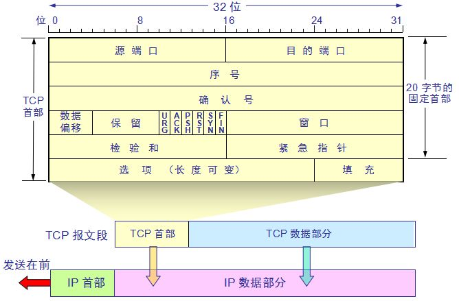

TCP简介
定义
既然要讲三次握手，就要好好讲。那么为了讲的细一点，就从TCP开始讲起把。
首先我们先解决是什么的问题。
TCP（Transmission Control Protocol）是一种面向连接的、可靠的、基于字节流的传输层通信协议，由IETF的RFC 793定义。
既然它是面向连接的、可靠的。那么什么是不可靠的呢。没错，它就是UDP，它是面向报文的。这里就不详细展开。
TCP报文结构

从上到下来看、目标端口以及源端口这个很好理解，就是发送和接收的两个端口
这里先附一些参考链接
基础：
https://www.jianshu.com/p/ca64764e4a26
https://cyc2018.github.io/CS-Notes/#/notes/%E8%AE%A1%E7%AE%97%E6%9C%BA%E7%BD%91%E7%BB%9C
https://github.com/wolverinn/Waking-Up/blob/master/
深入：
https://mp.weixin.qq.com/s/S1mv8AE_pQz3uHjRGS7tWg
https://www.jianshu.com/p/15754b4e9458
序号（seq）
这个是标志当前数据流的开始位置在总数据流上的标号，这样说可能比较抽象，我给大家举个例子。
比如说我有10000个字节的数据要发送，然后他被切分成20段的TCP报文，那么第一段的就是isn（初始序列号），第二段就是isn+500，第三段就是isn+1000。
那么这样有什么好处呢，这样数据的接收端就可以判断有没有数据在传输的过程中丢失了，从而给出应答，也为重传提供了基础。
然后再说说isn，他是随机生成的，可以一定程度上避免别人重置你的链接，提升可靠性，为什么呢这里不多说，可以去翻上面的参考链接
确认号（ack）
其实这个就是应答的编号。如果接收端接收到了相应的seq，并且在此seq之前的数据全部接收到了，那么他就会发送一次ACK=1（这个是标志位），ack=seq+1的包（或者叫消息）到发送端，表示数据以及在此之前的数据都接受到了，那么下次发送端发送的就从这个ack的值开始吧，即下次的seq=ack。
数据偏移 ：指的是数据部分距离报文段起始处的偏移量，实际上指的是首部的长度
同步 SYN：在连接建立时用来同步序号。当 SYN=1，ACK=0 时表示这是一个连接请求报文段。若对方同意建立连接，则响应报文中 SYN=1，ACK=1。
终止 FIN：用来释放一个连接，当 FIN=1 时，表示此报文段的发送方的数据已发送完毕，并要求释放连接。
确认 ACK :只有他置1的时候ack才会有效，其实就是表示他算是一个应答，所以其实除了建立连接的第一个报文，其他都是会带ACK的。而与之相对的，SYN通常也只在前两次握手中出现。FIN只在挥手的时候出现。
窗口：由于接收方的窗口可能动态调整，所以这个区域是留给接收方告诉发送方自身的窗口变化的，至于窗口是什么之后会在介绍，也可以看上面的参考链接了解。
三次握手
概览
终于可以介绍握手了，上了上面的基础，我们来说握手就很简单
我们分步解析
大家可以看到，在第一次握手中，发送方（客户端）将SYN置1，这是建立连接的姿势，然后获取一个随机的isn值，我们称之为client_isn，然后将其作为seq，再把整个报文发给服务端。
客户端接收到了这个值之后，他也会产生一个sever_isn，但是这个却不是完全随机产生的，该序列号是用SYN报文段的源和目的IP地址与端口号以及仅有该服务器知道的秘钥生成的散列函数值,这是为了抵御SYN泛洪攻击，暂不详谈。
那么根据我们已经学习到的知识，在我们服务器产生的报文中，ack=client_isn+0+1（没有实际数据），然后seq = sever_isn。然后服务端再把它发送到客户端，这就是第二次握手。
最后是第三次握手，这次是客户端发送给服务端，seq 就是服务端的ack，ack就是服务端的seq+1，至此连接建立。
常见问题
为什么是三次而不是两次握手呢
假设一种情况
client 发出的第一个连接请求报文段并没有丢失，而是在某个网络结点长时间的滞留了，以致延误到连接释放以后的某个时间才到达 server。本来这是一个早已失效的报文段。但 server 收到此失效的连接请求报文段后，就误认为是 client 再次发出的一个新的连接请求。于是就向 client 发出确认报文段，同意建立连接。假设不采用 “三次握手”，那么只要 server 发出确认，新的连接就建立了。由于现在 client 并没有发出建立连接的请求，因此不会理睬 server 的确认，也不会向 server 发送数据。但 server 却以为新的运输连接已经建立，并一直等待 client 发来数据。这样，server 的很多资源就白白浪费掉了。采用 “三次握手” 的办法可以防止上述现象发生。例如刚才那种情况，client 不会向 server 的确认发出确认。server 由于收不到确认，就知道 client 并没有要求建立连接。
而如果发生了这种情况，sever端会正常的返回ack包，但是client端会检测到异常并将rst=1来重置连接。
当第三次ACK丢失了，怎么办
在上面的ack与seq的关系中，我们知道，在没有接收到sever端的新的包的情况下，我们client端的seq和ack的值是不会变的。那么，第三次ack丢失，但其实对于client来说，他已经认为连接成功了，那么他将会开始发送数据包，而数据包因为seq和ack都和本来第三次的ack一样，所以也就相当于第三次握手成功了。
有些博文认为连接是会被重置的，关于这一点，大家可以看看这一篇
如果已经建立了连接，但客户端出现了故障怎么办？
服务器每收到一次客户端的请求后都会重新复位一个计时器，时间通常是设置为2小时，若两小时还没有收到客户端的任何数据，服务器就会发送一个探测报文段，以后每隔75秒钟发送一次。若一连发送10个探测报文仍然没反应，服务器就认为客户端出了故障，接着就关闭连接
四次挥手
概览

第一次挥手：Client将FIN置为1，发送一个序列号seq给Server；表示自己要中断连接，进入FIN_WAIT_1状态；
第二次挥手：Server收到FIN之后，发送一个ACK=1，acknowledge number=收到的序列号+1；进入CLOSE_WAIT状态。这个阶段主要是给服务端将剩余数据发给客户端的。
第三次挥手：Server将FIN置1，发送一个序列号给Client；进入LAST_ACK状态；
第四次挥手：Client收到服务器的FIN后，进入TIME_WAIT状态；接着将ACK置1，发送一个acknowledge number=序列号+1给服务器；服务器收到后，确认acknowledge number后，变为CLOSED状态，不再向客户端发送数据。客户端等待2*MSL（报文段最长寿命）时间后，也进入CLOSED状态。完成四次挥手。
常见问题
为何不将第三次挥手和第二次结合？
在之前已经提到过，因为服务端有可能还有数据没有传完，所以要分开。而ACK的意义是让客户端知晓服务端已收到请求，这也是为什么挥手比握手要多出一步的原因。
如果第二次挥手中，客户端没有收到怎么办？
由于没有收到，客户端会重新发送FIN。
最后的TIME_WAIT有什么意义？
确保最后客户端的ACK，服务端已经接收到了（如果没接收到，服务端会重发）。